| Arland Reinhard Editor 1968-69 Volume 10 |
David Tutacko Editor 1969-72 Volumes 11, 12, 13 |
||
 | |||
| Arland (BS Bus '70, MS Educ '71) retired in June 2010 following 40 years of classroom teaching as a Business and Vocational Education teacher. He taught from 1970-1990 at Fort Wayne Community Schools' Elmhurst High School, then from 1990-2010 at Southwest Allen County Schools' Homestead High School, Fort Wayne. He was the 2005 Southwest Allen County Schools Teacher of the Year, and 1 of 10 finalists for the 2006 Indiana Teacher of the Year. In addition to teaching, in 1972 Arland began escorting groups to 6 continents as President/Owner of Arland Reinhard Tours, Inc. Forty years later, in 2012, he retired from the tour business. His interest in travel was sparked by his first Parks House roomie, Larry Rose, whose interest in family genealogy led Arland to discover members of the Reinhard family still living in Switzerland. It was then that Arland decided he wanted to visit his cousins in Switzerland, which in turn led to his interest in traveling the world. He and his wife, Ruth, live in Bluffton, Indiana. They have 4 children and 11 grandchildren. Arland can be contacted at arland@adamswells.com. | Bio, awards, achievments, including links to any personal web pages or projects | ||
| 1967-68 Volume 9 | |||||
| Issue 1 September 11 (Image not available Click here for transcript) |
Issue Missing | Issue Missing | 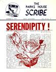 Issue 4 December 6 |
Issue Missing | Issue Missing |
| 1968-69 Volume 10 | |||||
| 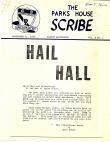 Issue 1 September 21 |
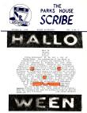 Issue 2 October 2 |
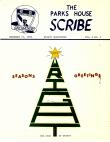 Issue 3 December 19 |
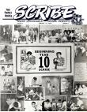 Issue 4 February 11 |
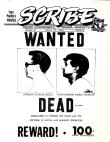 Issue 5 March 25 |
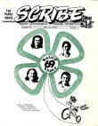 Issue 6 May 9 |
| 1969-70 Volume 11 | |||||
| Issue 1 September 20 |
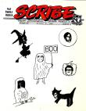 Issue 2 October 31 |
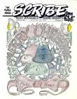 Issue 3 December 18 |
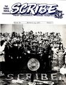 Issue 4 February 21 |
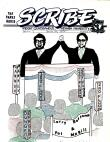 Issue 5 March 26 |
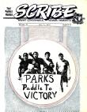 Issue 6 May 7 |
| 1970-71 Volume 12 | |||||
| 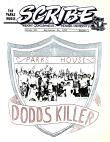 Issue 1 September 26 |
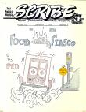 Issue 2 November 7 |
Issue 3 December 17 |
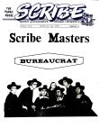 Issue 4 February 11 |
Issue 5 March 27 |
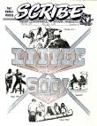 Issue 6 May 2 |
| 1971-72 Volume 13 | |||||
 Issue 1 September 3 |
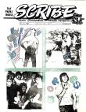 Issue 2 October 29 |
Issue 3 December 17 |
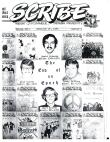 Issue 4 February 25 |
Publication ceased with Volume 13 Issue 4 (Note: Mastheads of Volume 13 Issues 1, 2, & 3 contain an incorrect volume #) |
|
Contact us:
Please send email, comments, suggestions, contributions to: Webmaster Alan OliverRevised 10/9/17